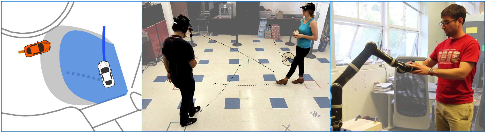

|
Professor: Andrea Bajcsy (abajcsy [at] cmu [dot] edu)
Time: Mon & Wed, 11:00 - 12:20pm
Location: NSH 3002
Syllabus: PDF
Overview
Robot deployment around real people is rapidly accelerating: autonomous cars navigate through crowded cities on a daily basis, assistive robots increasingly help end-users with daily living tasks, and large teams of human engineers interactively teach robots basic skills. However, robot interaction with humans requires us to re-evaluate the assumptions built into all components of our autonomy algorithms, from decision-making, to machine learning, to safety analysis.
In this graduate seminar class, we will build the mathematical foundations for modeling human-robot interaction, develop the tools to analyze the safety and reliability of robots deployed around people, and investigate algorithms for robot learning from human data. The approaches covered will draw upon a variety of tools such as optimal control, dynamic game theory, Bayesian inference, and modern machine learning. Throughout the class, there will also be guest lectures from experts in the field. Students will practice essential research skills including reviewing papers, writing research project proposals, and technical communication.
Prerequisites
The course is open to graduate students without strict prerequisites. Familiarity with differential equations, probability, and linear algebra is highly encouraged. Interested undergraduate students with a strong background may seek approval from the instructor.
|
Schedule (tentative)
| Date |
Topic |
Info |
Week 1
Mon, Jan 15 |
No Class (MLK Day) |
|
Week 1
Wed, Jan 17 |
Lecture Introduction |
- Please check the course syllabus
- Please sign up for 3 presenter slots by Monday Jan 22
|
Week 2
Mon, Jan 22 |
Lecture Dynamical systems model of interaction |
Due Presentation Sign-up
|
Week 2
Wed, Jan 24 |
Lecture Refresh: optimal decision-making |
|
Week 3
Mon, Jan 29 |
Lecture Safety Analysis I |
Further reading:
- A Time-Dependent Hamilton–Jacobi Formulation of Reachable Sets for Continuous Dynamic Games, Mitchell et al. (2005)
- Hamilton-Jacobi formulation for reach-avoid differential games, Margellos & Lygeros (2009)
- Reach-avoid problems with time-varying dynamics, targets and constraints, Fisac et al. (2015)
- Hamilton-Jacobi Reachability: A Brief Overview and Recent Advances, Bansal et al. (2017)
|
Week 3
Wed, Jan 31 |
Lecture Safety Analysis II |
HW 1 Released
|
Week 4
Mon, Feb 5 |
Lecture Multi-agent Safety I |
Due Project Proposal
|
Week 4
Wed Feb 7 |
Paper discussion Multi-agent Safety II |
- Safety Assurances for Human-Robot Interaction via Confidence-aware Game-theoretic Human Models. Tian, et al. (2022)
- Towards the Unification and Data-Driven Synthesis of Autonomous Vehicle Safety Concepts. Leung & Bajcsy, et al. (2022)
|
Week 5
Mon, Feb 12 |
Paper discussion Computationally scalable safety |
- Reachability-Based Safety Guarantees using Efficient Initializations. Herbert, et al. (2019)
- DeepReach: A Deep Learning Approach to High-Dimensional Reachability. Bansal & Tomlin (2020)
- ISAACS: Iterative Soft Adversarial Actor-Critic for Safety. Hsu, et al. (2023)
- Parameter-Conditioned Reachable Sets for Updating Safety Assurances Online. Borquez, et al. (2023)
|
Week 5
Wed, Feb 14 |
Lecture Safety filtering & planning |
Due HW 1
Further Reading:
- An Efficient Reachability-Based Framework for Provably Safe Autonomous Navigation in Unknown Environments. Bajcsy, et al. (2019)
- Data-Driven Safety Filters: Hamilton-Jacobi Reachability, Control Barrier Functions, and Predictive Methods for Uncertain Systems. Wabersich, et al. (2023)
- The safety filter: A unified view of safety-critical control in autonomous systems. Hsu, et al. (2023)
|
Week 6
Mon, Feb 19 |
Paper discussion Safe robot learning |
- Constrained policy optimization. Achiam, et al. (2017)
- A general safety framework for learning-based control in uncertain robotic systems. Fisac, et al. (2018)
- Safe Learning in Robotics: From Learning-Based Control to Safe Reinforcement Learning. Brunke, et al. (2021)
- Deception Game: Closing the Safety-Learning Loop in Interactive Robot Autonomy. Hu & Zhang, et al. (2023)
|
Week 6
Wed, Feb 21 |
Paper discussion Latent-space & human-centered safety concepts |
- Analyzing Human Models that Adapt Online. Bajcsy, et al. (2021)
- LS3: Latent Space Safe Sets for Long-Horizon Visuomotor Control of Sparse Reward Iterative Tasks. Wilcox & Balakrishna, et al. (2021)
- Learning autonomous vehicle safety concepts from demonstrations. Leung, et al. (2023)
- Robots That Ask For Help: Uncertainty Alignment for Large Language Model Planners. Ren, et al. (2023)
|
Week 7
Mon, Feb 26 |
Lecture Human behavior prediction |
- Activity Forecasting, Kitani et al. (2012)
- Confidence-aware motion prediction for real-time collision avoidance, Fridovich-Keil & Bajcsy et al (2019)
- Identifying Driver Interactions via Conditional Behavior Prediction, Tolstaya et al. (2021)
- MotionLM: Multi-Agent Motion Forecasting as Language Modeling, Seff et al. (2023)
|
Week 7
Wed, Feb 28 |
Lecture Game-theoretic models of multi-agent interaction |
HW 2 Released Further Reading
- Planning for Cars that Coordinate with People: Leveraging Effects on Human Actions for Planning and Active Information Gathering over Human Internal State. Sadigh et al. (2018)
- Efficient Iterative Linear-Quadratic Approximations for Nonlinear Multi-Player General-Sum Differential Games, Fridovich-Keil et al. (2019)
- NashFormer: Leveraging Local Nash Equilibria for Semantically Diverse Trajectory Prediction, Lidard et al. (2023)
|
Week 8
Mon, Mar 4 |
No Class (Spring Break) |
|
Week 8
Wed, Mar 6 |
No Class (Spring Break) |
|
Week 9
Mon, Mar 11 |
Lecture Learning from demonstration |
Further Reading:
- Maximum Entropy IRL, Ziebart et al. (2010)
- Maximum Margin Planning, Ratliff et al. (2006)
- Maximum Entropy Deep Inverse Reinforcement Learning, Wulfmeier et al. (2016)
- Of Moments and Matching: A Game-Theoretic Framework for Closing the Imitation Gap, Swamy et al. (2021)
|
Week 9
Wed, Mar 13 |
Guest lecture Prof. David Fridovich-Keil |
Talk Theme: Multi-agent reward learning
|
Week 10
Mon, Mar 18 |
Lecture Optimal teaching & active learning |
Due HW 2
Further Reading:
- Algorithmic and human teaching of sequential decision tasks. Cakmak and Lopes (2012)
- Pragmatic-Pedagogic Value Alignment. Fisac, et al. (2016)
- Batch Active Preference-Based Learning of Reward Functions. Biyik & Sadigh (2018)
|
Week 10
Wed, Mar 20 |
Paper discussions Learning from sub-optimal demonstration data |
- Better-than-demonstrator Imitation Learning via Automatically-ranked Demonstrations. Brown, et al. (2020)
- Learning from Suboptimal Demonstration via Self-Supervised Reward Regression. Chen et al. (2020)
- Confidence-Aware Imitation Learning from Demonstrations with Varying Optimality. Zhang and Cao. (2021)
|
Week 11
Mon, Mar 25 |
Lecture Sources of human feedback |
- Learning robot objectives from physical human interaction, Bajcsy et al. (2018)
- Reward-rational (implicit) choice: A unifying formalism for reward learning, Jeon et al. (2020)
- Learning Generalizable Robotic Reward Functions from “In-The-Wild” Human Videos, Chen et al. (2021)
- Correcting Robot Plans with Natural Language Feedback, Sharma et al. (2022)
|
Week 11
Wed, Mar 27 |
Paper discussions Reinforcement learning from human feedback |
|
Week 12
Mon, Apr 1 |
Guest Lecture Prof. Sanjiban Choudhury |
Due Mid-term Report
Talk Title: "Imitation Learning: It's only a game!"
|
Week 12
Wed, Apr 3 |
Lecture Repeated interactions, coordination, and influence |
- Formalizing Human-Robot Mutual Adaptation: A Bounded Memory Model. Nikolaidis, et al. (2014)
- On the Utility of Learning about Humans for Human-AI Coordination. Carroll, et al. (2019)
- Learning Latent Representations to Influence Multi-Agent Interaction. Xie, et al. (2020)
- Towards Modeling and Influencing the Dynamics of Human Learning. Tian, et al. (2023)
|
Week 13
Mon, Apr 8 |
Paper discussions Shared autonomy |
- Shared Autonomy via Deep Reinforcement Learning. Reddy, et al. (2018)
- Scaled Autonomy: Enabling Human Operators to Control Robot Fleets, Swamy et al. (2020)
- LILA: Language-Informed Latent Actions. Karamcheti and Srivastava et al. (2021)
- Learning to share autonomy across repeated interaction. Jonnavittula and Losey. (2021)
|
Week 13
Wed, Apr 10 |
Lecture Reward specification challenges |
- Quantifying Hypothesis Space Misspecification in Learning from Human-Robot Demonstrations and Physical Corrections. Bobu et al. (2020)
- Inverse Reward Design. Hadfield-Menell et al. (2020)
- The effects of reward misspecification: Mapping and mitigating misaligned models. Pan et al. (2022)
- Goal Misgeneralization in Deep Reinforcement Learning. Langosco et al. (2023)
|
Week 14
Mon, Apr 15 |
Lecture Representation learning |
- Human-Driven Feature Selection for a Robotic Agent Learning Classification Tasks from Demonstration. Bullard, et al. (2018)
- Feature Expansive Reward Learning: Rethinking Human Input. Bobu, et al. (2021)
- People construct simplified mental representations to plan. Ho, et al. (2022)
- Learning invariant representations for reinforcement learning without reconstruction. Zhang et al. (2021)
- Language-Driven Representation Learning for Robotics. Karametchi, et al. (2023)
|
Week 14
Wed, Apr 17 |
Lecture Alignment |
- Scalable agent alignment via reward modeling: a research direction. Leike et al. (2018)
- Getting aligned on representational alignment, Sucholutsky et al. (2023)
- Diffusion Model Alignment Using Direct Preference Optimization, Wallace et al. (2023)
- What Matters to You? Towards Visual Representation Alignment for Robot Learning, Tian et al. (2023)
- AI Alignment: A Comprehensive Survey. Ji et al. (2023)
|
Week 15
Mon, Apr 22 |
Lecture What is safety? AI Safety, OOD, and Risk in Robotics |
- How Should a Robot Assess Risk? Towards an Axiomatic Theory of Risk in Robotics, Majumdar & Pavone (2017)
- A System-Level View on Out-of-Distribution Data in Robotics, Sinha et al. (2022)
|
Week 15
Wed, Apr 24 |
Guest Lecture Prof. Aditi Raghunathan |
Talk Theme: ML Robustness
|
Week 16
Mon, Apr 29 |
Guest Lecture |
Due Slides on Apr. 30
|
Week 16
Wed, May 1 |
Final presentations |
|
Week 17
Mon, May 6 |
Final presentations |
Due Final report
|
|